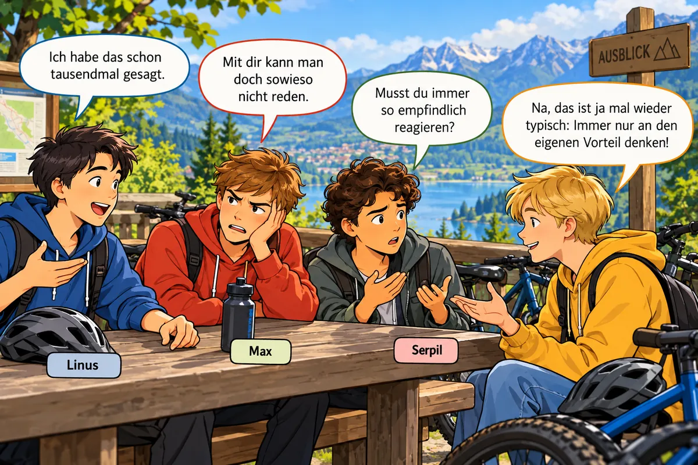

🗯️ Verletzende Äußerungen

Manchmal werden in Diskussionen verletzende Äußerungen gemacht.
Lies die Sprechblasen genau: Wie klingen die Sätze? Wie würdest du dich fühlen?
In welcher Situation könnten sie gefallen sein?
Welche Äußerung passt zu welcher Situation? Tippe eine Sprechblase an und dann die passende Situation.
Beschreibe eine eigene Situation ✨ KI prüft
🤔 Warum stören diese Äußerungen?
Viele verletzende Sätze enthalten und Übertreibungen. Markiere sie rot.
MERKE
Verletzende Äußerungen stören eine Diskussion, weil …
- sie die Person angreifen statt über die Sache zu sprechen,
- sie verallgemeinern (immer, nie, sowieso, tausendmal),
- sie kein Argument enthalten,
- der andere sich verletzt fühlt und zurückschlägt – dann wird gestritten statt diskutiert.
Begründe in eigenen Worten ✨ KI prüft
✏️ Formuliere die verletzenden Äußerungen um
Sag dasselbe Anliegen so, dass es niemanden verletzt. Tipp: Sprich über dich (ich wünsche mir …, mir ist wichtig …) statt über den anderen. ✨ KI prüft
Das Streitgespräch nach dem Wandertag
Nach dem Wandertag kommt es zu einem Streitgespräch darüber, wer sich am Schreiben des Berichts für die Klassenzeitung beteiligt hat.
Aufgabe 3 · MarkierenAn welchen Stellen reagieren Max, Serpil und Linus unsachlich? Markiere sie mit dem roten Stift.
Warum sind diese Stellen unsachlich? ✨ KI prüft
💬 Ich-Botschaften statt Du-Botschaften
INFO
Bei einer sage ich etwas über mich selbst aus.
Bei einer wird eine Aussage über einen anderen gemacht.
„Du hast rein gar nichts gemacht!“ → Du-Botschaft, Vorwurf
„Ich ärgere mich, weil ich viel allein machen musste.“ → Ich-Botschaft
Ich-Botschaft oder Du-Botschaft?
Formuliere die markierten Sätze mit „ich“ um ✨ KI prüft
Ersetze das Personalpronomen du durch das Personalpronomen ich. Wie verändert sich die Wirkung?
Schreibe das Gespräch um ✨ KI prüft
Schreibe das Gespräch von Linus, Max und Serpil so um, dass es sachlich ist und niemanden verletzt. Verwende Ich-Botschaften.
🧯 Duell gegen die KI: der Streit-Entschärfer
Leonie und Kevin sind richtig sauer – das Plakat für die Projektwoche ist nicht fertig. Sie werfen dir Du-Botschaften an den Kopf.
- Lies den Vorwurf.
- Antworte ruhig und sachlich mit einer Ich-Botschaft. Kein Gegenangriff!
- Mach einen Vorschlag oder sag, was du dir wünschst.
Wenn du gut antwortest, beruhigen sich die beiden. Wenn nicht … 🔥
Punkte: Ruhige Ich-Botschaft = 2 Punkte für dich. Halb gelungen = je 1 Punkt. Gegenangriff oder Du-Botschaft = 2 Punkte für die KI.